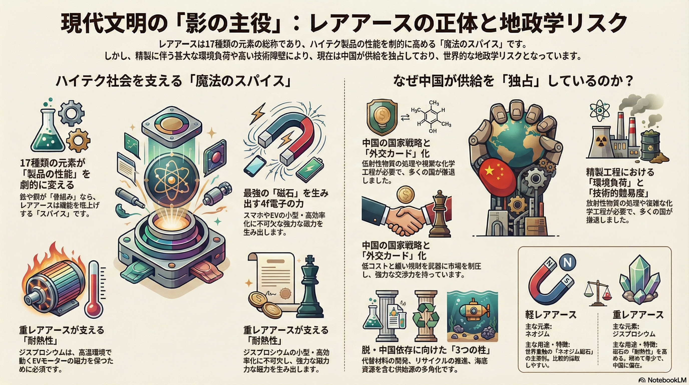

現代文明の「影の主役」：レアアースの正体と地政学リスク

【画像解説】「魔法のスパイス」が抱える供給のジレンマ
レアアースは17種類の元素の総称であり、EVモーターやスマホの磁石など、ハイテク製品の性能を劇的に高める役割を果たしています。しかし、その精製工程には放射性物質の処理を伴う甚大な環境負荷と高い技術障壁があり、現在は中国が供給をほぼ独占しています。この「独占」が外交上のカードとして利用されるリスク（地政学的リスク）となっており、世界中で「脱・中国依存」に向けた供給源の多角化が急務となっています。